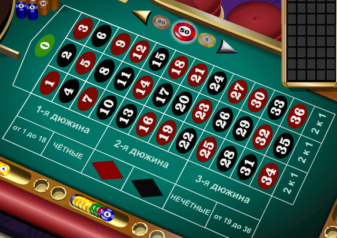

Возникновние азартных игр

Точно назвать точное время, когда именно появились первые азартные игры вряд ли представиться возможным, однако это явно было
очень давно, когда люди находились еще на весьма примитимном уровне развития и занимались охотой и собирательством. Смысл всех
азартных игр зключается в том, что далеко не все зависит от игроков и присутствует немалый элемент случайности, который трудно или
даже невозможно вовсе предвидеть. Такого рода эффект манит даже современного человека, а что уж тогда и говорить про наших
диких предков, для которых удача или неудача в игре была не прочто каким-то совпадением, а была нечто-то вроде
благоволения или наоборот наказания духов природы. Остается вопророс, каким же именно образом выглядели первые азартные
игры наших предков? Бытует мнение, что некоторые из них не сильно то и отличались от некоторых современных. В нынешнее время
есть огромное количество игр, неотъемлемой частью которых являеются кубики с циферками, обычно от одного до шести, но
бывают и более сложнной формы с большим количеством чисел, так вот, нечто похожее было найдено у древних людей в еще очень
давние времена, кубики тогда конечно были не пластмассовые, а из кости, камня или дерева, но тем не менее, сама суть того,
что это были не просто игры, а именно азартные игры с элементом случайности никак не отменяется.
Популярность азартных игр
Многие задаются вопросом, в чем же секрет популярности азартных игр, если те в большинстве случаев просто оставляют
игроков без денег, а иногда даже без последних? Тут все довольно-таки банально, весь секрет азартных игр заключается в самом
их названии, теми, кто в них играет движет банальный азарт. Игрокам попросту не терпится узнать, смогут ли они выиграть,
ведь часто игроки делают высокие ставки и в случае, если им повезет, они смогут выиграть весьма немалую денежную сумму.
Причем стоит отметить, что это касается как новичков, так и вполне себе бывалых игроков, новички еще ничего не знают и им
интересно проверить на практике, сумеют ли они что-либо выиграть или же нет, а вот заядлые игроки каждый раз надеятся на то,
что сегодня настал именно их день, когда им улыбнется фортуна и они получат возможность сорвать джекпот.
Можно ли победить в азартной игре?
Очень многих людей интересует вопрос, можно ли регулярно побеждать в той или иной азартной игре? Если это игра, где одни
игроки соревнуются с другими, как например в покере, то ответ на этот вопрос очевиден, конечно же можно. В таком типе игры
в любом случае один из игрокв выйдет победителем, причем он может быть довольно-таки слабым, но победить из-за везения или
из-за того, что другие игроки еще более слабые или неопытные. И вот совершенно другой вопрос в том, можно ли постоянно
побеждать не против других игроков, а против самой игры, как например при игре в рулетку. При должном везении действительно
можно доволь-но долго выигрывать таким образом, но тут как говорится, сколько веревочке не вится... Конечно же у многих
людей в голове закралась мысль, а можно ли создать какую-либо схему игры, чтоб она позволяла всегда или почти всегда выигрывать?
И при ответе на этот вопрос надо учитывать 3 аргумента. Первый: азартные игры расчитаны таким образом, что у игры будет какое-то,
хоть и небольшое преимущество перед вами, но и его обычно хватает. Например в рулетке 36 чисел и 0, то есть всего 37, в случае,
если вы угадываете число, то ваш выигрыш увеличивается в 36 раз, в итоге ваши шансы против игры 36/37. Таким образом, если ради
эксперимента поставить на все числа без исключения фишки, то ваш банк уменьшится на 2 с лишним процента, также, если
применять эту логику ко всей игре, то в среднем за 1 раунд ставок ваш банк уменьшается на такой же процент, вне зависмости от
того выигрываете вы или проигрываете. Второй аргумент: шанс на выигрыш есть всегда, точно также, как и на проигрыш, арифметически
можно просчитать этот шанс, но он может и не выпасть. Пример, если убрать 0, то шанс выпадения черного или красного цвета
составляет 50%, если выпал один цвет, то шанс того, что он выпадет еще раз уменьшается в 2 раза, а для другого цвета напротив
увеличивается в 2 раза. Если какой-то цвет выпал 4 раза подряд, то шан на его последующее выпадение равно 6,25%, и с каждым
последующем выпадением шанс будет уменьшаться вдвое, казалось бы, все просто, ставь на противоположный цвет и срывай куш,
но нет, бывает, что один и тот же цвет выпадает более 10 раз подряд, когда шанс составляет менее сотой процента, и игрок
поставивший все на столь высокий шанс все проиграет. Третий аргумент: можно ли придумать схему, чтоб иметь гораздо более высокий
шанс на победу, чем у простых игроков? Сказать на 100%, что такое невозможно нельзя, но если кто и знвает такую схему, то
вряд ли станет делиться с ней с незнакомыми людьми, да еще и просто так.